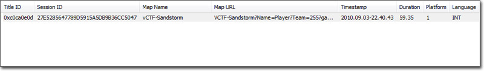
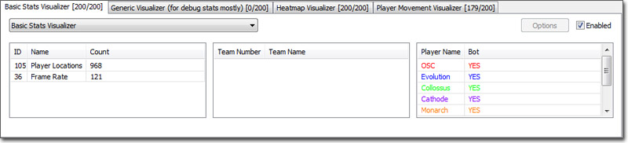
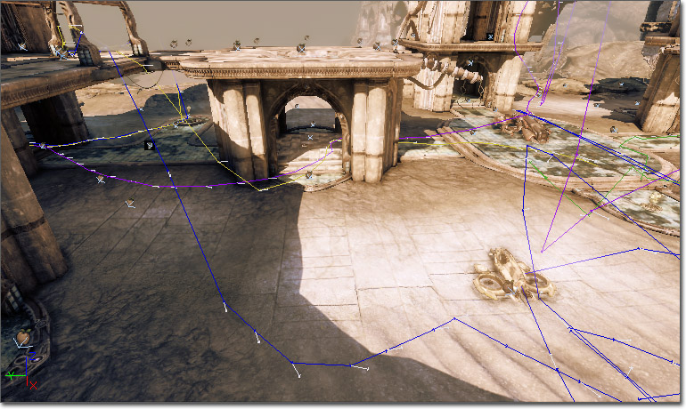
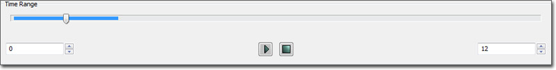

UDN
Search public documentation:
GameStatsVisualizerReference
日本語訳
中国翻译
한국어
Interested in the Unreal Engine?
Visit the Unreal Technology site.
Looking for jobs and company info?
Check out the Epic games site.
Questions about support via UDN?
Contact the UDN Staff
中国翻译
한국어
Interested in the Unreal Engine?
Visit the Unreal Technology site.
Looking for jobs and company info?
Check out the Epic games site.
Questions about support via UDN?
Contact the UDN Staff
Game Statistics Visualizer Reference
Document Summary: An overview of the features available in the Game Statistics viewer. Document Changelog: Created by Josh Markiewicz. Updated by Jeff Wilson.Overview
This document will describe the features available for analyzing and visualizing data collected during gameplay sessions. It will also details steps necessary to extend the statistics capturing system for game specific data. More detail about the underlying systems can be found in InstrumentingGameStatistics. The idea is that statistics are streamed to disk during the game and then collected at the end for visualization in the editor. What you record is entirely up to you, but the engine supports a wide range of possibilities out of the box. They can be scaled back or extended as necessary. For the moment, you must include -gamestats at the end of the command line to access the new visualizer tab. For example:UDK.exe editor -gamestats
The Visualizer Window
The following highlights the various sections in the game statistics window. It is divided into four sections:
It is divided into four sections:
The Game Session Window

After a gameplay session is successfully recorded, the file should be moved into your GameDir/Stats folder where it will be automatically scanned by the editor. When the appropriate map is loaded, all gameplay sessions associated with that map show up here. The data displayed in this section is purely informative and should be clear from the column heading. To get started, click a gameplay session which will fill out the visualizer tabs below with the appropriate data.The Visualizer Tabs

In the visualizer tabs are where most of the manipulation occurs. By selecting various data points you can tweak the visualizer to display only the data relevant to your query. These filters, combined with the time control, will feed the visualizer displaying the data. Only data actually recorded during that session will be displayed, even if your game supports other events, zero counts are suppressed. At the top, each tab label contains the name of the current visualizer as well as the number of results found in the current filter. The first number is a count of the data points meaningful to the visualizer itself. The second number is a count of the results returned from the database query. A visualizer may not use all records from the database and it may aggregate/generate data from the query. The point is to simply give the user an indication that the visualizer is rendering/working with data and not an empty result set. Directly below is a combo box allowing you to change the type of visualizer in use by this tab. Following that, there are three columns: Events, Teams, and Players. By default, nothing is selected and denotes "show everything". You can select multiple entries per column with SHIFT-click. If you only want to see data for a specific event, highlight the one event, if you want to see just a given team, select the team and all the data for that team will display. To go back to "show everything", SHIFT-click the highlighted element or click in the whitespace. In addition, each tab has an "enabled" checkbox in the top right corner of the tab, which will turn on and off the display of data related to this visualization. In addition, if the visualizer supports it, there is an options button to bring up configurable elements of the visualizer. At startup, the editor scans for any and all visualizers that exist in your game and creates a tab. At the moment, the editor supports three basic visualizations: Basic Stats Visualization, Heatmap, and Player Movement.Basic Stats Visualizer
The purpose of the basic stats visualizer is a catch all for events contained within the data stream. It is very much a dumb terminal, displaying each known stat as a sprite over the playfield. The data is available in both the top down and perspective client windows. The top down view gives the most immediate "whole picture" of the play session. You can see the entire map and the location of all events. With the client window selected, hovering over a sprite gives you tooltip-like information on the event. Double clicking on that event will shift the perspective view to the position and orientation of the event as it occured.
The top down view gives the most immediate "whole picture" of the play session. You can see the entire map and the location of all events. With the client window selected, hovering over a sprite gives you tooltip-like information on the event. Double clicking on that event will shift the perspective view to the position and orientation of the event as it occured.
 Just like the top down view, the perspective view displays tooltip-like information.
You can specify the sprite to draw, and other attributes, in the [UnrealEd.BasicStatsVisualizer] section of the DefaultEditor.ini file:
Just like the top down view, the perspective view displays tooltip-like information.
You can specify the sprite to draw, and other attributes, in the [UnrealEd.BasicStatsVisualizer] section of the DefaultEditor.ini file:
+DrawingProperties=(EventID=0,StatColor=(R=0,G=0,B=0),Size=8,SpriteName="EditorResources.BSPVertex")
Heatmap Visualizer
The heatmap visualizer shows specific data points in aggregate as a range of colors from purple (almost no activity) to red (highest level of activity). At the moment this visualizer keys specifically off the location and kill events, giving users an idea of map coverage during a playtest. This visualizer is most useful in aggregate over multiple gameplay sessions.
The options dialog for heatmaps provides the user with the ability to cap thresholds. By setting the upper slider to a lower value, all values higher than specified will be marked as red. Subsequently, all values lower than the value on the lower slider will be masked out from the visualization. By tweaking these parameters you can tune the heatmap to your needs. In addition there is a screenshot capture button which will configure the top-down viewport appropriately for a screenshot and place it in your GameDir/Screenshots directory.
At the moment this visualizer keys specifically off the location and kill events, giving users an idea of map coverage during a playtest. This visualizer is most useful in aggregate over multiple gameplay sessions.
The options dialog for heatmaps provides the user with the ability to cap thresholds. By setting the upper slider to a lower value, all values higher than specified will be marked as red. Subsequently, all values lower than the value on the lower slider will be masked out from the visualization. By tweaking these parameters you can tune the heatmap to your needs. In addition there is a screenshot capture button which will configure the top-down viewport appropriately for a screenshot and place it in your GameDir/Screenshots directory.
Player Movement Visualizer
Player movement in this visualizer is represented as an array of colored lines. Each player is given a unique colored line which will play out the movement they made over time.

Adding/Changing The Visualizer
By default one of each visualizer type is created in the tabbed area. The ability to add/remove tabs is set for a later date, but for now if you need more than one of the same kind of visualizer you can change its type via the combo box just below the tab. Inside you will find all known visualizers and you can freely switch between them.The Time Slider

The time slider works by specifying a range of time in the two spinners. The left side is the beginning of the time range, and the right side the end. As these numbers are changed, the blue bar expands or contracts to visually mark the range. Each time the range is updated, all queries (even those disabled) are updated with a new result set from the session. You can scrub through the data by clicking on the thumb button in the middle of the slider and moving back and forth through time accordingly.The Output Window
 The output window servers to display useful information from a variety of sources, be it the tool or any of the individual visualizers. Things such as errors and query results will display here.
The output window servers to display useful information from a variety of sources, be it the tool or any of the individual visualizers. Things such as errors and query results will display here.